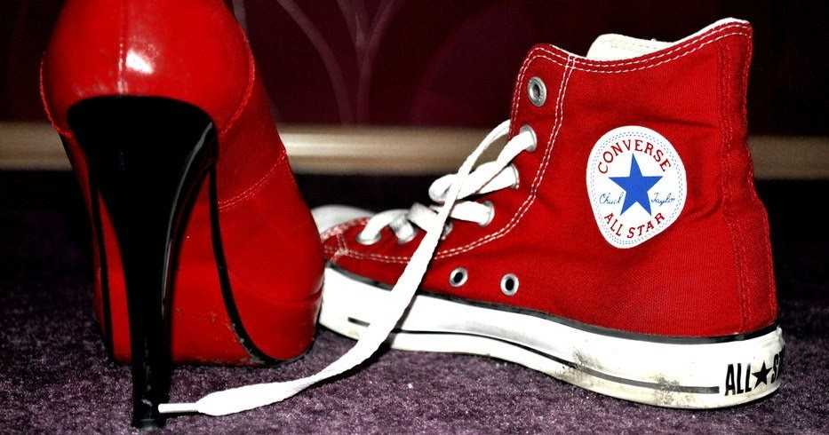

Jak wybrać sneakersy? 5 porad przed zakupem
Choć sneakersy już od dawna nie są tylko butami, ale i stylem życia, wiele osób wciąż popełnia poważne błędy, kupując swoje obuwie. Nietrafiony wybór nieraz skutkuje poważniejszymi konsekwencjami niż tylko brakiem komfortu dla stopy. Same sneakersy także mogą łatwo stać się ofiarą Waszej pochopnej decyzji. Prezentujemy Wam zatem pięć złotych zasad, o których warto pamiętać przed zakupem nowych butów.
1. Cztery pory roku sneakersów
Różnych ludzi można zauważyć na ulicach polskich miast. Motywacje niektórych z nich pozostają wielką tajemnicą. Trudno na przykład zrozumieć, dlaczego ktoś brnie przez rozmokłe śniegi w mocno wyciętych tenisówkach. Przemoknięte, zmarznięte stopy i narażenie obuwia na zniszczenie to dość wysoka cena jak na efektowną prezentację swojej atrakcyjnej kostki. Na wszystko jest przecież odpowiednia pora. Chcąc zostać zimą przy converse’ach, zdecydowanie lepiej odłożyć liczne modele z tekstylnego materiału na rzecz skórzanych Chuck Taylor Wp Boot, a do klasycznych trampek wrócić dopiero latem. Istotny będzie również kolor sneakersów. Zwłaszcza wiosną i jesienią warto zrobić sobie przerwę od uniwersalnej i modnej bieli. Zamiast każdego dnia desperacko walczyć o przywrócenie obuwia do nieskazitelnej czystości, wybierz sneakersy w ciemniejszych barwach – błoto i kurz będą na nich mniej widoczne, dzięki czemu zaoszczędzisz trochę czasu i nerwów.
2. Oczekiwania a rzeczywistość
A więc wymarzyliśmy sobie te jedne jedyne sneakersy, które noszą wszyscy nasi idole i musimy je mieć! Innej opcji nie ma. Choć trzeba czasem pofolgować własnym zachciankom, warto zastanowić się, czy to rzeczywiście najlepszy wybór. Moda to jedno, a realia co innego. Przed zakupem nowych sneakersów pomyśl, jak dużo czasu dziennie spędzasz w butach bez przerwy, jakie dystanse pokonujesz pieszo, jakim warunkom musi stawić czoła Twoje obuwie. Jeżeli podróżujesz głównie samochodem i masz możliwość zmiany butów parę razy dziennie, możesz pozwolić sobie na płaską podeszwę i słabszą wentylację buta. Jeśli jednak przemierzasz odległości godne bohatera „Samotności długodystansowca” i pokonujesz drogi, które mogły być inspiracją dla piosenki „Rocky Road to Dublin”, wybierz sneakersy wygodne i niezawodne, takie jak na przykład Nike Air Max 95 Premium. Warto przyjrzeć się oddychalności sneakersów i ich wkładkom. Dobrze, by miały one właściwości antybakteryjne, dzięki czemu unikniesz przykrych zapachów za każdym razem, gdy wyciągniesz stopę z buta.
3. Moda…
Dość już napisałem o tym, że buty muszą być przede wszystkim praktyczne. Mądrej głowie dość dwie słowie. Żeby nie wyjść na kaznodzieję, muszę wspomnieć oczywiście o walorach estetycznych, jakie niesie ze sobą odpowiedni dobór sneakersów. Buty mają taką przewagę nad innymi częściami garderoby, że wyglądają mniej więcej tak samo na wszystkich, niezależnie od wagi i postury. Kupując sneakersy, można więc podążać tylko za własną intuicją. Rynek zalewają sneakersy różnych rodzajów i kształtów, dzięki czemu możesz dopasować je do każdej właściwie sytuacji w życiu. Ich główną zaletą jest uniwersalność. Znajdziesz modele przeznaczone do sportu, a także na bardziej wyrafinowane okazje. Nieważne, czy wybierasz buty pod konkretną stylizację, czy mające mieć bardziej ogólne zastosowanie – lepiej zdecyduj się na model, który pasuje do Twojej osobowości i gustu, niż ten noszony przez pół miasta, ale niezbyt Cię przekonujący. Obserwuj trendy, czytaj opinie, ale ostateczną decyzję podejmuj, kierując się osobistymi wrażeniami.
4.… i wygoda
Wracając do kazania – niech owe osobiste wrażenia nie przesłonią Ci rozsądku. Jeżeli czujesz, że przymierzony but nie leży jak ulał, nie zachowuj się jak siostry Kopciuszka i odpuść. Kryształowe sneakersy to z pewnością kusząca wizja, ale szkoda ścierać pięty i deformować palce tylko po to, by atrakcyjnie zaprezentować się podczas balu. Trendy kształtują świat sneakersów, lecz podlegają ciągłym zmianom. Twoja wygoda natomiast ma trwać, niezależnie od tego, ile czasu upłynie. Komfort to oczywiście kryterium względne, dla każdego oznaczające coś innego. Przykładem może być porównanie popularnych converse’ów Chuck Taylor All Star z dowolnymi nike’ami Air Max. Dla jednych wygodą będzie lekkość, a utrapieniem nienaturalnie wysoka podeszwa. Inni odwrotnie – pokochają amortyzację, odrzucając zbyt cienkie dla nich spody. 
5. Po co mi właściwie te buty?
Jednym z największych błędów, jakie można popełnić, kupując sneakersy, jest nabycie ich jedynie pod wpływem impulsu. Jeżeli chcesz mieć po prostu trzysta sześćdziesiątą piątą parę w swoim pokoju na buty, nic nie stoi na przeszkodzie! Jeśli jednak jakimś trafem kupujesz buty, które mają służyć ci niemal codziennie przez najbliższy sezon, dwa lub trzy, zastanów się, jakie będzie ich główne przeznaczenie. Mają sprawdzić się jako obuwie do pracy lub szkoły? A może na wyjścia z przyjaciółmi? Sneakersy na spacery bądź do sportu również będą różniły się od tych „do kościoła”. Od razu porzuć myślenie pod tytułem „to będą buty do wszystkiego”. Ktoś mądry kiedyś powiedział, że jak coś jest do wszystkiego, to jest do niczego. Tak samo jest ze sneakersami. Potrzebujesz różnych butów na różne okazje. Na uczelnię lepiej na przykład założyć Diadora Tokyo, a do biegania choćby adidas UltraBoost. Jest różnica, prawda?Szalejąc na punkcie sneakersów, nie zapominajcie o tym, aby Wasze zakupy były przemyślane. Im lepiej się do nich przygotujecie, tym dłużej będą Was cieszyć ich rezultaty!